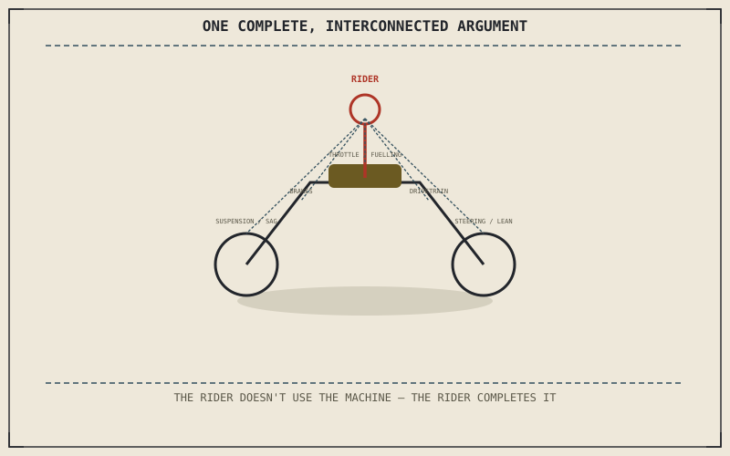

Chapter 1.1 made a promise before this book had explained a single stroke of a single engine: that its actual goal wasn't reciting what a camshaft does, but learning to look at a motorcycle sitting in a parking lot and see a single, interconnected argument — an answer, built in metal and rubber, to the question of how to move a human being efficiently, cheaply, and directly through the world, at the cost of asking that human being to become part of the machine that carries them. This is the chapter where that promise is finally cashed in.
Chapter 16.2 closed by pointing here: back to the very first question this book asked, answered now with everything the 150 chapters in between actually built. This is that return.
Returning to Chapter 1.1's Argument
Chapter 1.1 insisted a motorcycle only makes sense once you stop looking at its parts individually and start looking at how they talk to each other — the engine's torque means nothing until a clutch and gearbox make it useful, the suspension's job is defined by the brakes and tyres just as much as by its own springs and dampers. Part VIII's physics, opening with exactly this claim in Chapter 8.1, gave that interconnection its full, unified treatment. Every part boundary since — Chapter 10.1's maintenance, Chapter 11.11's diagnosis, Chapter 12.5's being equipped, Chapter 13.8's modifications — restated the identical argument in a new domain, because it was never a claim about engines specifically. It was a claim about what a motorcycle actually is.
The Rider Completes the Machine, Fully Understood
Chapter 1.1 called the rider a part of the machine rather than merely its operator, a claim that could only sound poetic before this book had explained what it actually meant mechanically. It means a rider's countersteering input is genuinely part of the lean-control loop Chapter 4.4's self-centering geometry only half completes on its own. It means a rider's body weight is genuinely part of the sprung mass Chapter 5.4's sag calculation depends on. It means a rider's throttle hand is genuinely metering the air-fuel system Chapter 2.3 described. "Completing the machine" was never a metaphor. It was a precise mechanical claim this book has spent 150 chapters actually proving.
A motorcycle sitting in a parking lot, understood correctly, is a single interconnected argument built in metal and rubber — and after everything this book has explained, that sentence from Chapter 1.1 finally means something specific enough to actually see, not just something pleasant to read.

A diagram of a complete motorcycle with every major system connected by lines back to a single rider figure at its center, closing the loop opened in Chapter 1.1 between the machine's individual parts and the single interconnected argument they actually form together.
A Common Misconception, Cleared Up Early
It's a common assumption that finishing a book like this one means now knowing everything worth knowing about a motorcycle. Chapter 14.8's electric powertrain already proved the more honest alternative: genuinely new technology keeps arriving, changing which specific trade-offs exist without ever escaping the underlying pattern Chapter 16.1 named. What this book actually leaves a reader with isn't a finished catalogue of facts. It's the framework to keep reading any motorcycle correctly, including ones that don't exist yet.
Where This Leads
Vol. I — The Machine is complete. Every system, every trade-off, every connection this book set out to explain has now been explained. The next time a motorcycle is sitting in front of you, silent, look at it the way Chapter 1.1 asked you to from the very first page — not as a collection of parts, but as one complete, interconnected argument, finished in metal and rubber, waiting for a rider to complete it.
Key Concepts to Remember
- A motorcycle only makes sense as a single interconnected system, the argument Chapter 1.1 opened this book with and every part boundary since has restated in a new domain.
- The rider completing the machine is a precise mechanical claim, not a metaphor, once countersteering, sprung mass, and throttle metering are all properly understood.
- This book's real payoff is a framework for reading any motorcycle correctly, including future ones, not a finished catalogue of facts about the ones that exist today.
Cross-References
| ← Ch. 1.1 | Opened this entire book with the promise this chapter now fulfills — a motorcycle as a single interconnected argument, not a collection of parts. |
| ← Ch. 8.1 | Opened Part VIII's unified physics treatment, the chapter Chapter 1.1 promised would put every earlier system back together. |
| ← Ch. 16.1 | Established every choice in this book as a trade, not a flaw; this chapter closes the book on that same pattern, extended to technology not yet invented. |